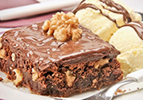

Salmão com crosta
crocante e risotoSelecionamos o salmão com crosta
crocante com risoto, pois essa é
uma verdadeira delícia 2 em 1!
Lasanha doce
Essa lasanha doce tem dois
chocolates especiais, com camadas
de puro sabor!-
Risoto de bacalhau
Para um jantar sofisticado, nada
melhor que um risoto de bacalhau! -
Cheesecake de frutas
vermelhasEsse cheesecake de frutas
vermelhas é uma sobremesa de
encher os olhos! -
Medalhão de filé
mignon com molho de
azeitonasQuer se tornar um verdadeiro chef?
Então prepare um delicioso
medalhão com molho de azeitonas! 
Mousse de café com
chantillyO mousse de café com chantilly é
de surpreender qualquer paladar!-
Salada de arroz com
camarãoQuem disse que a salada não
teria aquele toque gourmet?
Confirme com essa salada de
arroz com camarão! - 
Brownie de creme de
avelã com nozesPara fechar qualquer refeição com
sucesso, nada melhor que um
brownie de creme de avelã com
nozes: sobremesa impecável.